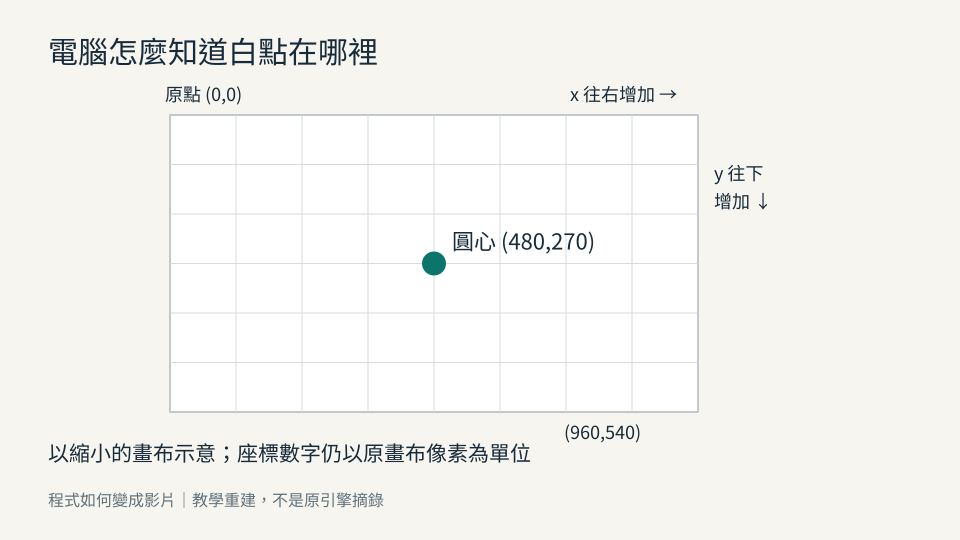
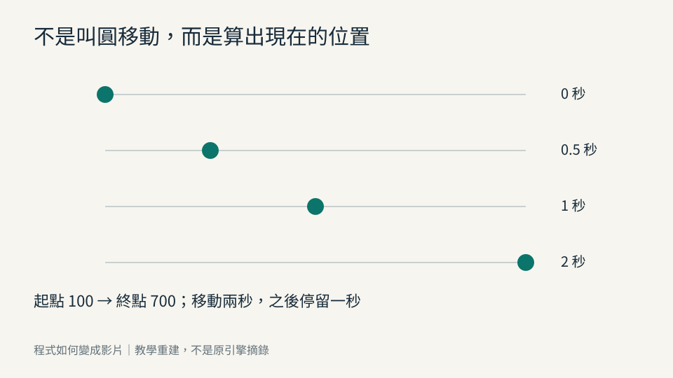
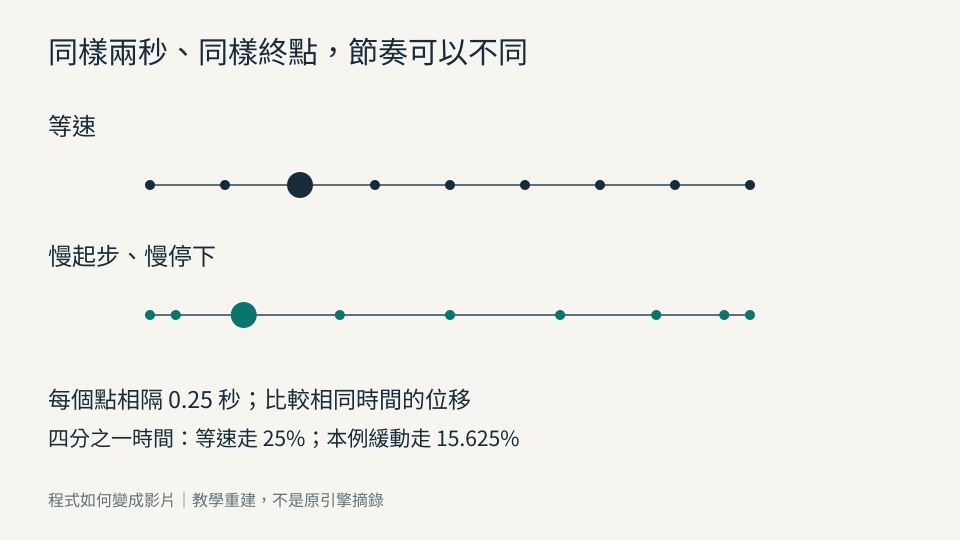
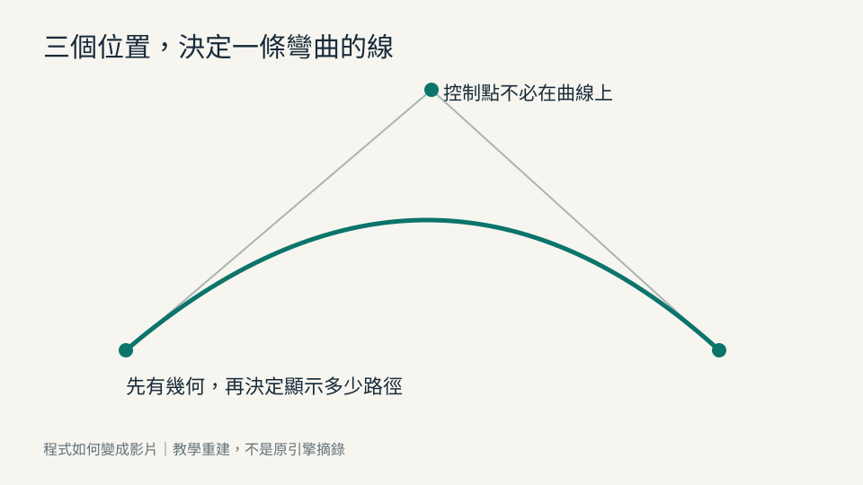
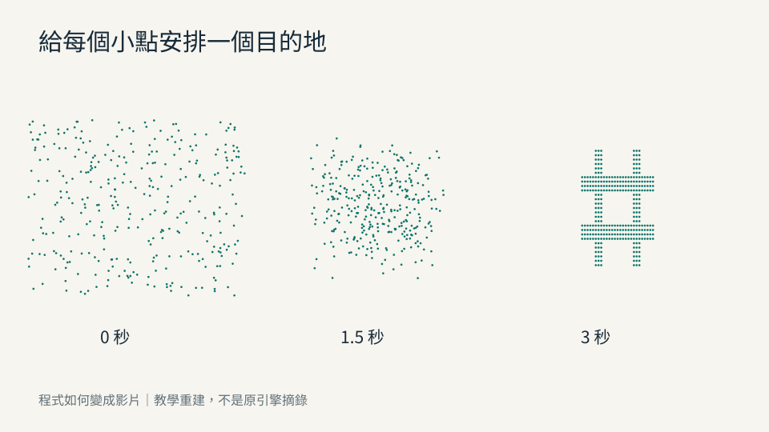
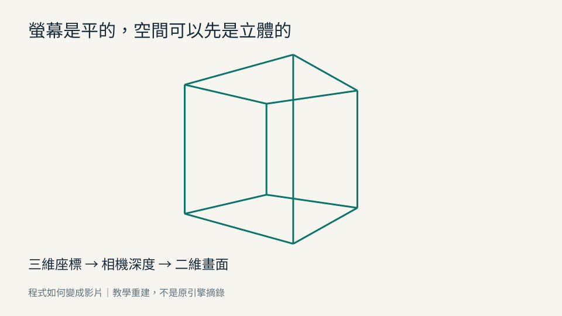

讀者先理解
「起點和終點已經知道，現在該走到哪裡？」
先拿數字算一遍，再認識「插值」。
從一個位置、一張畫面，到 AI 協作
不背術語，也能看懂 AI
如何用程式寫出一部電影
模型可以換，理解留下來。這個專案不以工具操作為主軸，而是把視覺意圖拆成時間、座標、數學、資料與可以驗收的畫面。
先讀一章看看交給 Codex 開始寫二十四章已有完整寫作任務；第四章提供校準樣章，尚未經李詩民確認。正式書稿由 Codex 接手後逐章產生、檢核與保存。
每一章先從一個看得見的問題出發，再介紹工程師給它取的名字。
「起點和終點已經知道，現在該走到哪裡？」
先拿數字算一遍，再認識「插值」。
每張卡都有白話意思、例子和比喻的限制。需要讀官方文件時，也找得到英文名稱。
搜尋 109 張術語卡 →影格、座標、時間、插值、緩動、場景、路徑、中文字形、粒子、噪聲與運動規則。
資料與網路、三維與相機、著色器、聲音同步、渲染與編碼、測試、AI 協作與小型引擎。
最小原理附有 34 項單元測試。測試能檢查數值、邊界與可重現性，不能代替人類讀者的理解與審美判斷。檢視本次驗收紀錄






解壓縮到一個獨立資料夾把這個完整資料夾作為 Codex 的工作目錄；已有寫書專案時，先讀其規約並保留既有修改，不假定任何 D 槽位置。
給它下面這段啟動指令讓它讀取專案內的完整主指令，不只憑一句話猜方向。
從真正的章節初稿開始先做前言與第 1～3 章，再依序完成其餘章節。每章審查並更新 work.json；停止時留下下一步，不宣稱背景自動續寫。
請先完整讀取這個資料夾的 AGENTS.md、00_START_HERE.md、book.json 與 work.json，再執行 CODEX_INSTRUCTIONS/MASTER_PROMPT.md。 這是《程式如何變成影片》的寫書專案，不是製作影片續作。驗證交接包後，直接開始前言及第 1～3 章完整初稿，逐章完成技術與初學者閱讀審查，並保存進度。
你現在接手一個正式寫書專案：《程式如何變成影片》。請把本交接包當成可獨立工作的完整背景，而不是再向使用者詢問已確認的方向。 這不是影片續作，也不是 Programmatic Motion Engine V1 操作手冊。要寫的是一本讓非工程背景的成人，看懂「人的視覺意圖如何變成資料、數學、時間、程式與可播放影片」的原理書。模型與框架可以換，核心理解要能遷移。 請先完整讀取 AGENTS.md、00_START_HERE.md、book.json、work.json、CONTEXT/DECISIONS_AND_BOUNDARIES.md。再讀取 OUTLINE/FULL_BOOK_OUTLINE.md、OUTLINE/chapter_plan.json、GLOSSARY/TERMINOLOGY_RULES.md、STYLE_GUIDE/TECHNICAL_ACCURACY.md 與第 4 章校准樣章。依當前目錄的既有規則安全整合；不要覆蓋其他書稿，不猜使用者本機路徑。 最高優先的寫作規則是：任何新英文術語，不准用另一個讀者還不懂的術語來解釋。順序是問題、生活理解、圖解與比喻邊界、中文名稱、英文名稱、具體數字、必要公式與最小程式。讓讀者不背英文也能說清楚機制，但仍能辨認官方文件里的名稱。用繁體中文，尊重有 AI 實務經驗的讀者。 先執行： python scripts/validate_package.py python -m unittest discover -s tests -v python examples/build_examples.py 確認文件完整與範例基準後，直接開始前言以及第 1、2、3 章的完整初稿，寫入 MANUSCRIPT/chapters/；不要只再給一份計劃或目錄。第 4 章樣章是語氣參考，尚未獲使用者確認，不計為正式完稿。 每章必須有：完整連貫敘述、能觀察的圖或對照、至少一組數字實算、術語首次解釋、最小可執行例子或明確圖解、一個錯誤與修正、三題含答案、讓 AI 協作的指令及驗收、可追溯來源。查驗必要技術事實，用官方或原始技術來源，不猜模型排名、最新 API 或許可證。 按技術審查→初學者視角審查→引用核對→修稿的流程完成每章；可由同一模型分角色工作，但不得稱為獨立人類專家驗收。工作目標是逐批完成整本書，而不是停在第一批規劃。每批完成後更新 work.json、章節狀態、審查檔案與可重建輸出，再繼續下一批；若本次執行必須結束，保存真實進度與下一步，不聲稱之後會自動背景續寫。 《當世界開始被計算》僅為案例。本包提供 QA 副本、影片中繼資料與四張截圖；未附完整長片與原引擎原始碼。不要虛構原函數、行號、參數或測試。原案報告記載 Python/Cairo 與 Linux CPU，不是 Remotion／4090；eSpeak 是工程旁白，正式聲線沒有完成。缺原始碼時用新的教學重建例子，不妨礙本書原理寫作，且明確標「教學重建」。 正文不綁定付費語音與單一框架。最小範例不需 API 金鑰或 GPU；不可上傳私人素材、使用聲紋、付費調用、部署、發佈或修改全域設置。最終交付以可維護 Markdown 主稿、圖解、例子、測試、術語索引與來源為核心；排版不取代寫作。 現在開始檢查專案並撰寫第一批完整書稿，把結果真正寫進文件。
《當世界開始被計算》是案例，不是本書唯一技術答案。本包附原驗收報告、這次讀取的媒體規格與四張成片截圖；未附原案完整原始碼或長片。不能依截圖虛構函式、行號或算法。
原案記載採 Python／Cairo、Linux CPU；正式旁白仍未完成。案例的歷史測試和這次教學範例的測試，分開記錄。
閱讀證據與限制 →